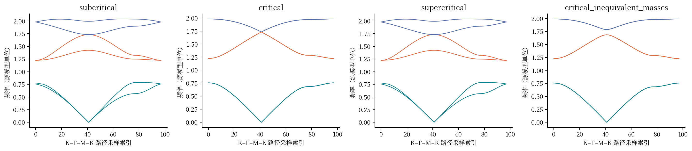
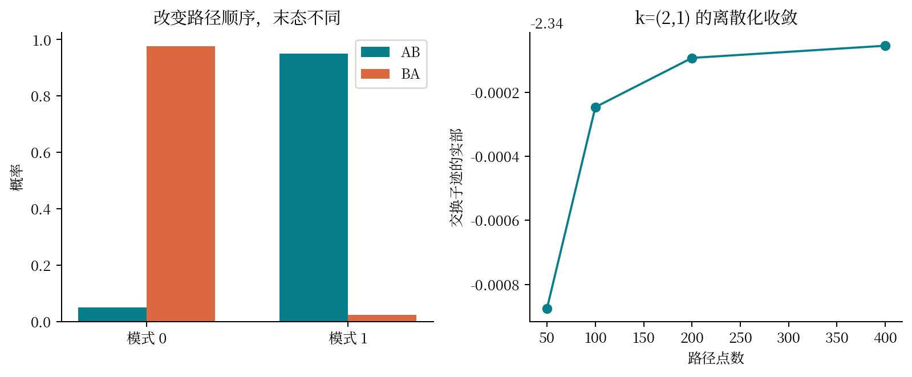
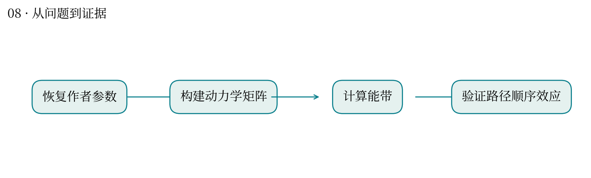
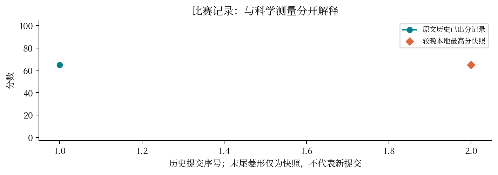

← 返回交互图解08 · Kagome 弹性网络
沿两条路径操作同一系统，先后顺序为什么会改变结果？
最高分快照：64.76 · 2026-10-12T01:11:24+08:00
问题与背景
非阿贝尔在这里指变换不对易：先 A 后 B 与先 B 后 A 不同。Kagome 弹性网络用模式子空间的平行输运展示这种效应。
实际做了什么
从作者代码存档恢复参数和环境，计算能带、对偶残差以及不同路径分辨率下的 Wilson 环。
结果与解释
本地最终输出中，k=(2,1)、400 点路径的交换子迹为 −2.34005428；图解同时展示真实 AB/BA 模式概率和分辨率收敛。
关键坑点
简并子空间不能逐个特征向量随意追踪；基底规范、矩阵乘法顺序和路径离散化都会影响结果。
与你的研究如何联系
可借 PCA 理解“一个子空间能用不同基底表示”；但 PCA 本身并不等于非阿贝尔输运。网页用三维旋转说明顺序依赖，再连接真实计算量。
局限与题目/评分审视
本地记录指出题面参数不完整。补参依据和自定选择需保留。另已核对 DOI：论文正式题名为 Dualities and non-Abelian mechanics，Nature 577, 636–640 (2020)，旧总结的题名和卷页需更正。

作者源模型复现｜每条线是一支振动频率；横轴为既有路径索引，未对数据重新拟合。下载矢量图
真实计算｜k=(2,1)，概率图采用 400 点输出；收敛图保留 50、100、200、400 点，非零交换子体现不对易。下载矢量图
方法流程示意｜依据过程记录整理，不是测量数据或运行轨迹。下载矢量图
历史分数｜只连原文“已出分”记录；失败、rejected、排队不按 0 分绘制。菱形是较晚本地最高分快照，无法据此确定最终计分提交。下载矢量图提交记录（原文快照）
| attempt | 提交时间 | 分数 | 状态 |
|---|
| 53431 | 10-11 09:43:41 | 64.7577 | 已出分 |
来源与复现
源文件 SHA256 见 证据清单；用 scripts/build.py 重建图表。
- 逐题科学报告/feishu-original.json
- .scores_baseline.json
- 赛题/10-新增材料CPU/non-abelian-mechanics-in-a-critical-kagome-elastic-b5018746/AGENT-REPORT-KAGOME-kagome.md
- 赛题/10-新增材料CPU/non-abelian-mechanics-in-a-critical-kagome-elastic-b5018746/STATUS.json
- 赛题/10-新增材料CPU/non-abelian-mechanics-in-a-critical-kagome-elastic-b5018746/final-outputs/band_structures.csv
- 赛题/10-新增材料CPU/non-abelian-mechanics-in-a-critical-kagome-elastic-b5018746/final-outputs/method.json
- 赛题/10-新增材料CPU/non-abelian-mechanics-in-a-critical-kagome-elastic-b5018746/final-outputs/nonabelian_holonomy.csv
Dualities and non-Abelian mechanics